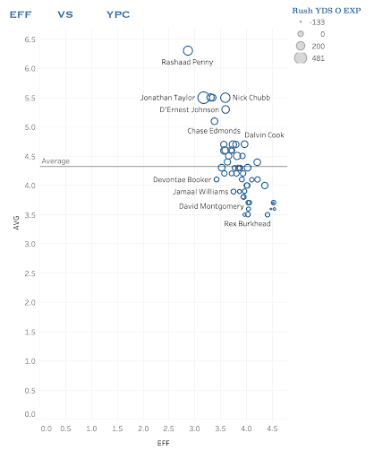
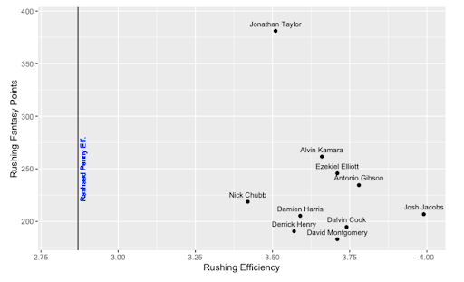
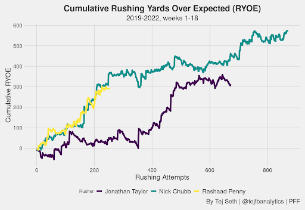

Unlucky Penny
By Nathan Mehta | November 10, 2022
Seahawks RB Rashaad Penny was carted off the field in the third quarter of the week 5 matchup against the New Orleans Saints. Injuries are always difficult to watch, but this one was particularly deflating given the explosive 151 yard, 2 touchdown performance on 17 carries he displayed the week prior.
The rollercoaster of emotions that characterized these past weeks for Penny, is emblematic of his entire career: Penny was one of two backs (the other being Saquon Barkley) drafted in the first round of the 2018 NFL draft. The Seahawks’ anointment of Penny indicates that they were aware of his potential, yet they have failed to show confidence that Penny can be their featured back despite his whopping 5.7 career yards per carry. For context, the all-time rushing average leader among those with a qualifying number of carries, Jamaal Charles, has a 5.4 career average. Exacerbating Penny’s shortage of volume on the field has been his injury history. Penny missed 27 games in his first 4 seasons, tearing his ACL in 2019. This inauspicious combination of factors has deprived the NFL of one of the best runners of the football in the NFL.
This season was meant to be Penny’s breakout season, augmenting the heartbreak surrounding his early exit from 2022. Last year, while sharing carries with running back Alex Collins (119 carries to Collins’ 108), Penny paced the league in a number of stats. His 6.3 yards per carry in his 10 games were the second most in any season since 1973 (Jamaal Charles - 6.4). Penny’s rushing efficiency ranked atop the league at 2.87. Rushing Efficiency, a stat collected by NFL Next Gen Stats, tracks the total distance traveled per each yard gained. In other words, it measures how good a back is at getting up field and gaining yards rather than running horizontally - smaller quantities are better in this stat. Finally, Penny was 3rd in Rush Yards Over Expected.
 Evident from the plot above, Penny was quietly elite in 2021 when he was allowed to do his thing. Maybe the Seahawks mantra should’ve been “Let Penny Cook” instead of “Let Russ Cook”?? Perhaps the most incorruptible evidence of his potential is the fact that he led the league in YPC and EFF while his backfield mate Alex Collins ranked 41st and 31st respectively. Same offensive line and team, yet completely different rushing outputs.
If you take a look at the plot again, Rashaad’s Penny’s advanced tracking stats such as EFF and RYOE hovered around the same area as the number one fantasy football running back of 2021 Jonathan Taylor.
If Penny is utilized in a featured role as Taylor is (332 carries), could his fantasy output rival the preeminent backs such as Taylor and Chubb? I took a look at how rushing fantasy points correlates to EFF from the previous season.
 The scatterplot shows a clear inverse relationship between rushing efficiency the previous season and rushing fantasy points the next season. In other words, for players that received more than 192 carries in 2021, their fantasy points were better when they had better EFF numbers the year prior. This goes to show that given Rashaad Penny’s 2021 EFF, he was in prime position to make the leap into fantasy stardom in 2022 before injuries tragically took him from us (leaving my fantasy team for dead). Given the right amount of touches, Penny’s 2021 efficiency puts him at a projected 400+ fantasy points if he had at least 192 carries. There’s the real possibility that this projection is inflated due to the fact that Penny’s EFF would regress some with 200+ touches, but an elite output from him is a safe bet based on his explosiveness.
 This graphic by Tej Seth shows that Penny’s Rush Yards Over Expected pace for his career: It almost Identically mirrors Chubb’s.
Although, who is to say that Pete Carroll would have given him enough carries for us to fully board the Penny hype train. Regardless, it’s a shame that Penny won’t have the chance to win you any leagues or bragging rights with your buddies this season.